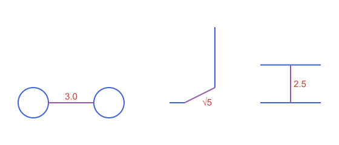
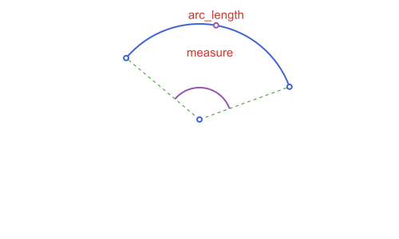
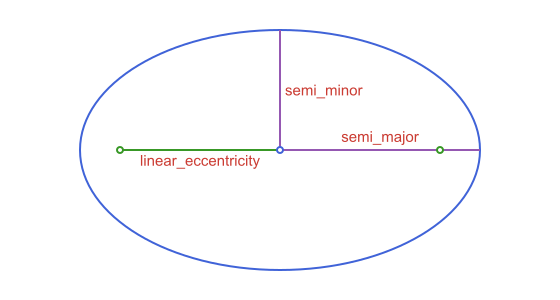
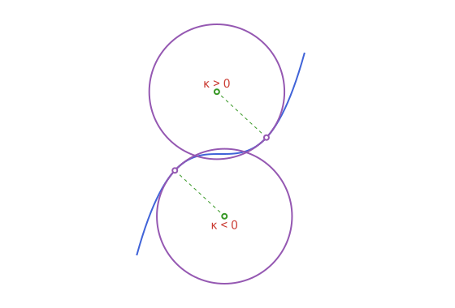
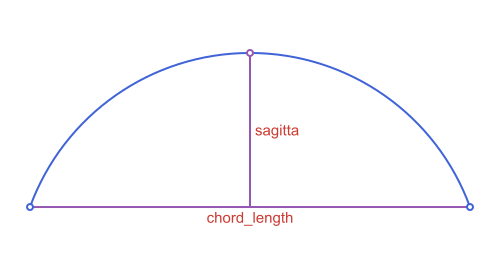
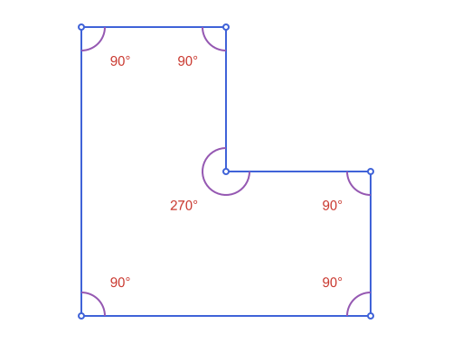
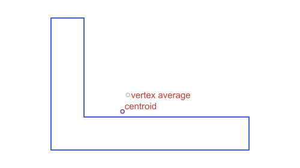

Measurements & Queries
The functions on this page take an object and return a number, an angle or a point derived from it. They are spread over the pages of each kind of object; this page puts them side by side and says what each one accepts.
| You want | Function | Accepts |
|---|---|---|
| Distance | distance | points, lines, rays, segments, circles, conics, arcs, polylines, polygons, bounding boxes, angles, half-planes, strips |
| Area | area, signed_area | any polygon (including curvilinear ones), circle, ellipse, bounding box; the signed one for polygons |
| Perimeter | perimeter, semiperimeter | any polygon, circle, ellipse, bounding box |
| Length of a curve | arc_length | segments, circular, elliptic, parabolic and hyperbolic arcs, polylines |
| Sides and angles of a polygon | side_lengths, interior_angles | polygons, curvilinear ones included |
| Shape of a conic | eccentricity, linear_eccentricity, semi_major, semi_minor, focal_parameter | ellipses, hyperbolas, parabolas |
| Curvature | curvature, signed_curvature | circles, circular arcs, conics at a point, parametric curves at a parameter |
| Chord and sagitta | chord_length, sagitta | arcs; the sagitta of circular arcs |
| Angle swept | measure | angles, circular and elliptic arcs |
| Angle between things | angle_measure_at, angle_measure_between, angle_measure_intersection, slope_angle | points, vectors, circles, lines |
| Middle | midpoint | two points, a segment, any arc |
| Center of mass | centroid | polygons, sectors, segments, annular sectors |
| Foci | foci | ellipses, hyperbolas |
| Closest of several points | nearest_point | a vector of points and a point |
| Sizes of a triangle | circumradius, inradius | triangles |
| Circle and point | power_of_point, tangent_length | a point and a circle |
using ApolloniusDistance
distance is the shortest distance between two objects, and it is 0 when they touch. It works in either order (distance(p, c) and distance(c, p) are the same) and for every pair the table above allows. What "the object" means depends on the type:
- For a curve (a circle, an ellipse, an arc, a polyline) it is the curve itself, so a point inside a circle is at distance
r - dfrom it, not0. - For a line it is the whole infinite line. For a ray or a segment it is only the piece drawn, so a point past the end is measured to the endpoint.
- For a region (a polygon, an angle, a half-plane, a strip) it is
0inside, unless you passmode=:boundary. See Polygons & Bounding Boxes and Unbounded Regions: Half-Planes, Strips & Angles.
c = APCircle2(APPoint(0.0, 0.0), 5.0)
distance(APPoint(2.0, 0.0), c), distance(APPoint(8.0, 0.0), c) # inside and outside: both 3.0(3.0, 3.0)Two objects of the same kind are measured between their nearest points:
c1, c2 = APCircle2(APPoint(0.0, 0.0), 1.0), APCircle2(APPoint(5.0, 0.0), 1.0)
sa, sb = APSegment(APPoint(9.0, 0.0), APPoint(10.0, 0.0)), APSegment(APPoint(12.0, 1.0), APPoint(12.0, 5.0))
la, lb = APLine(APPoint(15.0, 0.0), APPoint(19.0, 0.0)), APLine(APPoint(15.0, 2.5), APPoint(19.0, 2.5))
distance(c1, c2), distance(sa, sb), distance(la, lb)(3.0, 2.23606797749979, 2.5)
Area, perimeter and length
area and perimeter cover every closed shape: polygons of every kind, a circle and an ellipse.
t = APTriangle(APPoint(0.0, 0.0), APPoint(4.0, 0.0), APPoint(0.0, 3.0))
e = APEllipse2(APPoint(0.0, 0.0), 5.0, 3.0)
area(t), perimeter(t), area(e), perimeter(e)(6.0, 12.0, 47.12388980384689, 25.526998862788762)The area of an ellipse is exact (π·a·b). Its perimeter has no closed form, and the value returned is Ramanujan's approximation, which is accurate to many more digits than a drawing needs.
For a piece of a curve, use arc_length. It also works for an open chain such as an APPolyline2, where it is the sum of the sides.
arc = APCircularArc2(APCircle2(APPoint(0.0, 0.0), 3.0), APPoint(3.0, 0.0), APPoint(0.0, 3.0))
measure(arc), arc_length(arc) ≈ 3.0 * measure(arc)(1.5707963267948966, true)
arc_length(APPolyline2(APPoint(0.0, 0.0), APPoint(3.0, 4.0), APPoint(3.0, 6.0)))7.0Angles and their measures
In this package an angle is a region, the wedge between two rays: an APAngle2. Its measure is the number, in radians. The functions that return numbers say so in their names, measure or angle_measure_*, and the ones named angle or angles return APAngle2 objects.
| Function | Takes | Result |
|---|---|---|
measure(ang) | an APAngle2 or an arc | signed, in (-π, π], for an angle; the angle swept for an arc |
normalized_measure(ang) | an APAngle2 | in [0, 2π), so a reflex angle is above π |
abs(ang) | an APAngle2 | unsigned, in [0, π] |
angle_measure_at(vertex, p1, p2) | three points | unsigned, in [0, π] |
angle_measure_between(u, v) | two vectors | signed, in (-π, π] |
angle_measure_intersection(c1, c2) | two circles | the angle between the tangents where they cross |
angle_measure_brocard(t) | a triangle | the Brocard angle |
interior_angles(pg) | a polygon | a vector of APAngle2, one per vertex |
slope_angle(obj) | a vector, line, ray or segment | the angle of its direction from the x axis, as a number |
polar_angle(p, center) | a point | the angle of p around center (the origin by default), as a number |
To go the other way, angle_with_measure builds an APAngle2 from a measure and arc_with_measure an arc.
v = APPoint(0.0, 0.0)
angle_measure_at(v, APPoint(1.0, 0.0), APPoint(0.0, -1.0)), angle_measure_between(APVector(1.0, 0.0), APVector(0.0, -1.0))(1.5707963267948966, -1.5707963267948966)The first is the plain opening between the two rays, the second says the turn from the first vector to the second is clockwise. See Points, Lines & Rays for the angle type and its marks.
Shape of conics, arcs and polygons
The eccentricity says how far a conic is from a circle: 0 for a circle, below 1 for an ellipse, 1 for a parabola and above 1 for a hyperbola. linear_eccentricity is the distance from the center to each focus. An ellipse stores the semi-axes a and b along its own axes, and either can be the longer, so semi_major and semi_minor give them by size.
el = APEllipse2(APPoint(0.0, 0.0), 3.0, 5.0)
semi_major(el), semi_minor(el), linear_eccentricity(el), eccentricity(el)(5.0, 3.0, 4.0, 0.8)
curvature is 1 / r for a circle or a circular arc and depends on the point for the other conics, which must lie on the curve. On an ellipse it is largest at the ends of the major axis:
curvature(el, APPoint(0.0, 5.0)), curvature(el, APPoint(3.0, 0.0))(0.5555555555555556, 0.12)For an APParametricCurve2 the curvature is taken at a parameter t and computed numerically, to about seven digits. signed_curvature keeps the sign: positive where the curve turns counterclockwise as t grows and negative where it turns clockwise, so it also tells the two sides of an inflection point apart:
cubic = APParametricCurve2(t -> APPoint(t, t^3), (-1.0, 1.0))
signed_curvature(cubic, -0.5), signed_curvature(cubic, 0.5), curvature(cubic, 0.0)(-1.5359999114289156, 1.5359999114289156, 0.0)
An arc has a chord_length (the distance between its endpoints) and, if it is circular, a sagitta, the height of the arc over its chord:
circ3 = APCircle2(APPoint(0.0, 0.0), 3.0)
bow = APCircularArc2(circ3, point_on_circle(circ3, π / 9), point_on_circle(circ3, 8π / 9))
chord_length(bow), sagitta(bow), arc_length(bow)(5.638155724715451, 1.9739395700229934, 7.330382858376184)
For a polygon, side_lengths lists the sides in order and interior_angles the angle at each vertex as an APAngle2, whose normalized_measure is above π at a reflex vertex. signed_area is positive when the vertices run counterclockwise, which is a quick test of their order. The last two also work for curvilinear polygons. There the rays of the angle at a vertex are the tangents of the two sides that meet, and signed_area follows the direction of the first side:
L = APStraightNgon([APPoint(0.0, 0.0), APPoint(2.0, 0.0), APPoint(2.0, 1.0), APPoint(1.0, 1.0), APPoint(1.0, 2.0), APPoint(0.0, 2.0)])
rad2deg.(normalized_measure.(interior_angles(L))), side_lengths(L), signed_area(L), semiperimeter(L)([90.0, 90.0, 90.0, 270.0, 90.0, 90.0], [2.0, 1.0, 1.0, 1.0, 1.0, 2.0], 3.0, 4.0)
cvt = APCurvilinearTriangle2(APSegment(APPoint(0.0, 0.0), APPoint(4.0, 0.0)),
APCircularArc2(APCircle2(APPoint(4.0, 2.0), 2.0), APPoint(4.0, 0.0), APPoint(4.0, 4.0)),
APSegment(APPoint(4.0, 4.0), APPoint(0.0, 0.0)))
signed_area(cvt), rad2deg.(normalized_measure.(interior_angles(cvt)))(14.283185307179586, [45.0, 180.0, 135.0])An APBoundingBox has an area and a perimeter too, next to its bbox_width and bbox_height.
Points derived from an object
midpoint works for two points, for a segment and for any arc (the point halfway along the curve). centroid is the center of mass of the enclosed area, not the average of the vertices, and the two differ as soon as the vertices are not evenly spread:
pg = APStraightNgon([APPoint(0.0, 0.0), APPoint(6.0, 0.0), APPoint(6.0, 1.0), APPoint(1.0, 1.0), APPoint(1.0, 4.0), APPoint(0.0, 4.0)])
centroid(pg) # area-weighted, not the average of the six vertices[2.1666666666666665, 1.1666666666666667]
centroid also answers for a point, a segment (its midpoint), a bounding box, a circle or an ellipse (their center) and a polyline (the mass is on the curve). center and radius read the same data from every circle-like object (circles, ellipses and hyperbolas, their arcs, sectors, segments and annular sectors) without knowing which field holds it:
c0 = APCircle2(APPoint(1.0, 2.0), 3.0)
center(c0), radius(c0), center(APCircularArc2(c0, APPoint(4.0, 2.0), APPoint(1.0, 5.0))), centroid(APSegment(APPoint(0.0, 0.0), APPoint(2.0, 4.0)))([1.0, 2.0], 3.0, [1.0, 2.0], [1.0, 2.0])foci returns the two foci of an ellipse or a hyperbola as a tuple. nearest_point picks, from a vector of points such as the one intersection returns, the closest to a reference point, which is how to choose one of several solutions by where you want it.
foci(e), nearest_point([APPoint(1.0, 1.0), APPoint(4.0, 4.0)], APPoint(0.0, 0.0))(([4.0, 0.0], [-4.0, 0.0]), [1.0, 1.0])For a triangle, circumradius and inradius give the radii of its circumscribed and inscribed circles. For a point and a circle, power_of_point is d² - r², and tangent_length is its square root, the length of the tangent from the point (see Circles).
circumradius(t), inradius(t), power_of_point(APPoint(13.0, 0.0), c), tangent_length(c, APPoint(13.0, 0.0))(2.5, 1.0, 144.0, 12.0)